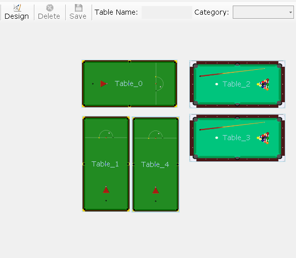

There are many situations that developer wants to serialize native .net object like button, picturebox and so on. As you know native objects in .net are not serializable so developer should use some other interfaces and classes to accomplish this task. why we need to serialize native object ?, some applications need to have dynamic number of same object with same behaviour, for example POS system for Pool Club, maybe in future club owner want to add another pool table, so he needs to order developer to recreate and rebuild the software ? like below figure;

Above figure shows you some pool and snooker table object that inherited by Button class.
to serialize and save the layout we need to have develop custom serializer.
To develop custom serializer, first create a class library project. then create another class called "BinarySerializer". and copy the below code into the class.
using System; using System.Collections.Generic; using System.Linq; using System.Text; using System.IO; using System.Runtime.Serialization; using System.Runtime.Serialization.Formatters; using System.Runtime.Serialization.Formatters.Binary; namespace YourProject { public class BinarySerializer { /// <summary> /// It Deserialize the binary file to object /// </summary> /// <param name="filename">Binary File Path</param> /// <returns>Returns Object that Must Cast to Specific Type</returns> public static object FromBin(string filename) { object result = null; try { BinaryFormatter formatter = new BinaryFormatter(); MemoryStream stream = new MemoryStream(File.ReadAllBytes(filename)); result = formatter.Deserialize(stream); GC.SuppressFinalize(formatter); } catch (Exception ex) { Diagnastics.EventLogger.Logger(ex, "BinarySerializer - FromBin(filename);"); } return result; } /// <summary> /// It Serialize the object to binary file /// </summary> /// <param name="filename">Binary File Path</param> /// <param name="obj">Current Object that Must Serialize</param> public static void ToBin(string filename, object obj) { try { BinaryFormatter formatter = new BinaryFormatter(); MemoryStream stream = new MemoryStream(); formatter.Serialize(stream, obj); FileStream file = new FileStream(filename, FileMode.Create, FileAccess.Write); BinaryWriter writer = new BinaryWriter(file); writer.Write(stream.ToArray(), 0, stream.ToArray().Length); writer.Flush(); writer.Close(); file.Close(); GC.SuppressFinalize(formatter); } catch (Exception ex) { Diagnastics.EventLogger.Logger(ex, "BinarySerializer - ToBin(filename,obj);"); } } /// <summary> /// It serialize the object to binary /// </summary> /// <param name="obj">Current Object that Must Serialize</param> /// <returns></returns> public static byte[] ToBin(object obj) { BinaryFormatter formatter = new BinaryFormatter(); MemoryStream stream = new MemoryStream(); formatter.Serialize(stream, obj); GC.SuppressFinalize(formatter); return stream.ToArray(); } /// <summary> /// It Deserialize the binary file to object /// </summary> /// <param name="filename">Binary File Path</param> /// <returns>Returns Object that Must Cast to Specific Type</returns> public static object FromBin(byte[] data) { BinaryFormatter formatter = new BinaryFormatter(); MemoryStream stream = new MemoryStream(data); object result = formatter.Deserialize(stream); GC.SuppressFinalize(formatter); return result; } /// <summary> /// It Serialize the object to binary file by custom surrogate /// </summary> /// <param name="filename">Binary File Path</param> /// <param name="obj">Current Object that Must Serialize</param> /// <param name="surrogate">Custom Surrogate</param> public static void ToBin(string filename, object obj, ISerializationSurrogate surrogate, Type objectType) { IFormatter formatter = new BinaryFormatter(); SurrogateSelector surrogateSelector = new SurrogateSelector(); surrogateSelector.AddSurrogate(objectType, new StreamingContext(StreamingContextStates.All), surrogate); formatter.SurrogateSelector = surrogateSelector; MemoryStream stream = new MemoryStream(); formatter.Serialize(stream, obj); FileStream file = new FileStream(filename, FileMode.Create, FileAccess.Write); BinaryWriter writer = new BinaryWriter(file); writer.Write(stream.ToArray(), 0, stream.ToArray().Length); writer.Flush(); writer.Close(); file.Close(); GC.SuppressFinalize(formatter); } /// <summary> /// It Deserialize the binary file to object /// </summary> /// <param name="filename">Binary File Path</param> /// <param name="surrogate">Custom Surrogate</param> /// <param name="objectType">Return Object Type </param> /// <returns></returns> public static object FromBin(string filename, ISerializationSurrogate surrogate, Type objectType) { IFormatter formatter = new BinaryFormatter(); SurrogateSelector surrogateSelector = new SurrogateSelector(); surrogateSelector.AddSurrogate(objectType, new StreamingContext(StreamingContextStates.All), surrogate); formatter.SurrogateSelector = surrogateSelector; MemoryStream stream = new MemoryStream(File.ReadAllBytes(filename)); object result = formatter.Deserialize(stream); stream.Close(); stream.Dispose(); GC.Collect(); GC.SuppressFinalize(formatter); return result; } /// <summary> /// It Serialize the object to binary file by custom surrogate /// </summary> /// <param name="obj">Current Object that Must Serialize</param> /// <param name="surrogate">Custom Surrogate</param> public static byte[] ToBin(object obj, ISerializationSurrogate surrogate, Type objectType) { IFormatter formatter = new BinaryFormatter(); SurrogateSelector surrogateSelector = new SurrogateSelector(); surrogateSelector.AddSurrogate(objectType, new StreamingContext(StreamingContextStates.All), surrogate); formatter.SurrogateSelector = surrogateSelector; MemoryStream stream = new MemoryStream(); formatter.Serialize(stream, obj); GC.SuppressFinalize(formatter); return stream.ToArray(); } /// <summary> /// It Deserialize the binary file to object /// </summary> /// <param name="obj">Binary Array Object</param> /// <param name="surrogate">Custom Surrogate</param> /// <param name="objectType">Return Object Type </param> /// <returns></returns> public static object FromBin(byte[] obj, ISerializationSurrogate surrogate, Type objectType) { IFormatter formatter = new BinaryFormatter(); SurrogateSelector surrogateSelector = new SurrogateSelector(); surrogateSelector.AddSurrogate(objectType, new StreamingContext(StreamingContextStates.All), surrogate); formatter.SurrogateSelector = surrogateSelector; MemoryStream stream = new MemoryStream(obj); object result = formatter.Deserialize(stream); stream.Close(); stream.Dispose(); GC.Collect(); GC.SuppressFinalize(formatter); return result; } } }
using System; using System.Collections.Generic; using System.Linq; using System.Text; using System.IO; using System.Runtime.Serialization; using System.Runtime.Serialization.Formatters; using System.Runtime.Serialization.Formatters.Binary; namespace YourProject { public class BinarySerializer { /// <summary> /// It Deserialize the binary file to object /// </summary> /// <param name="filename">Binary File Path</param> /// <returns>Returns Object that Must Cast to Specific Type</returns> public static object FromBin(string filename) { object result = null; try { BinaryFormatter formatter = new BinaryFormatter(); MemoryStream stream = new MemoryStream(File.ReadAllBytes(filename)); result = formatter.Deserialize(stream); GC.SuppressFinalize(formatter); } catch (Exception ex) { Diagnastics.EventLogger.Logger(ex, "BinarySerializer - FromBin(filename);"); } return result; } /// <summary> /// It Serialize the object to binary file /// </summary> /// <param name="filename">Binary File Path</param> /// <param name="obj">Current Object that Must Serialize</param> public static void ToBin(string filename, object obj) { try { BinaryFormatter formatter = new BinaryFormatter(); MemoryStream stream = new MemoryStream(); formatter.Serialize(stream, obj); FileStream file = new FileStream(filename, FileMode.Create, FileAccess.Write); BinaryWriter writer = new BinaryWriter(file); writer.Write(stream.ToArray(), 0, stream.ToArray().Length); writer.Flush(); writer.Close(); file.Close(); GC.SuppressFinalize(formatter); } catch (Exception ex) { Diagnastics.EventLogger.Logger(ex, "BinarySerializer - ToBin(filename,obj);"); } } /// <summary> /// It serialize the object to binary /// </summary> /// <param name="obj">Current Object that Must Serialize</param> /// <returns></returns> public static byte[] ToBin(object obj) { BinaryFormatter formatter = new BinaryFormatter(); MemoryStream stream = new MemoryStream(); formatter.Serialize(stream, obj); GC.SuppressFinalize(formatter); return stream.ToArray(); } /// <summary> /// It Deserialize the binary file to object /// </summary> /// <param name="filename">Binary File Path</param> /// <returns>Returns Object that Must Cast to Specific Type</returns> public static object FromBin(byte[] data) { BinaryFormatter formatter = new BinaryFormatter(); MemoryStream stream = new MemoryStream(data); object result = formatter.Deserialize(stream); GC.SuppressFinalize(formatter); return result; } /// <summary> /// It Serialize the object to binary file by custom surrogate /// </summary> /// <param name="filename">Binary File Path</param> /// <param name="obj">Current Object that Must Serialize</param> /// <param name="surrogate">Custom Surrogate</param> public static void ToBin(string filename, object obj, ISerializationSurrogate surrogate, Type objectType) { IFormatter formatter = new BinaryFormatter(); SurrogateSelector surrogateSelector = new SurrogateSelector(); surrogateSelector.AddSurrogate(objectType, new StreamingContext(StreamingContextStates.All), surrogate); formatter.SurrogateSelector = surrogateSelector; MemoryStream stream = new MemoryStream(); formatter.Serialize(stream, obj); FileStream file = new FileStream(filename, FileMode.Create, FileAccess.Write); BinaryWriter writer = new BinaryWriter(file); writer.Write(stream.ToArray(), 0, stream.ToArray().Length); writer.Flush(); writer.Close(); file.Close(); GC.SuppressFinalize(formatter); } /// <summary> /// It Deserialize the binary file to object /// </summary> /// <param name="filename">Binary File Path</param> /// <param name="surrogate">Custom Surrogate</param> /// <param name="objectType">Return Object Type </param> /// <returns></returns> public static object FromBin(string filename, ISerializationSurrogate surrogate, Type objectType) { IFormatter formatter = new BinaryFormatter(); SurrogateSelector surrogateSelector = new SurrogateSelector(); surrogateSelector.AddSurrogate(objectType, new StreamingContext(StreamingContextStates.All), surrogate); formatter.SurrogateSelector = surrogateSelector; MemoryStream stream = new MemoryStream(File.ReadAllBytes(filename)); object result = formatter.Deserialize(stream); stream.Close(); stream.Dispose(); GC.Collect(); GC.SuppressFinalize(formatter); return result; } /// <summary> /// It Serialize the object to binary file by custom surrogate /// </summary> /// <param name="obj">Current Object that Must Serialize</param> /// <param name="surrogate">Custom Surrogate</param> public static byte[] ToBin(object obj, ISerializationSurrogate surrogate, Type objectType) { IFormatter formatter = new BinaryFormatter(); SurrogateSelector surrogateSelector = new SurrogateSelector(); surrogateSelector.AddSurrogate(objectType, new StreamingContext(StreamingContextStates.All), surrogate); formatter.SurrogateSelector = surrogateSelector; MemoryStream stream = new MemoryStream(); formatter.Serialize(stream, obj); GC.SuppressFinalize(formatter); return stream.ToArray(); } /// <summary> /// It Deserialize the binary file to object /// </summary> /// <param name="obj">Binary Array Object</param> /// <param name="surrogate">Custom Surrogate</param> /// <param name="objectType">Return Object Type </param> /// <returns></returns> public static object FromBin(byte[] obj, ISerializationSurrogate surrogate, Type objectType) { IFormatter formatter = new BinaryFormatter(); SurrogateSelector surrogateSelector = new SurrogateSelector(); surrogateSelector.AddSurrogate(objectType, new StreamingContext(StreamingContextStates.All), surrogate); formatter.SurrogateSelector = surrogateSelector; MemoryStream stream = new MemoryStream(obj); object result = formatter.Deserialize(stream); stream.Close(); stream.Dispose(); GC.Collect(); GC.SuppressFinalize(formatter); return result; } } }
As you see, there are many ToBin, FromBin for different situations.
For serialize native .net object, you need to use ISerializationSurrogate interface, for serialize native object you need also create another class that inherits from ISerializationSurrogate interface, and after that pass the object to the FromBin or ToBin method in BinarySerializer class. please pay attention to below code snippet.
using System; using System.Collections.Generic; using System.Linq; using System.Text; using System.Runtime.Serialization; using System.Runtime.Serialization.Formatters; using System.Runtime.Serialization.Formatters.Binary; namespace YourProject { public class MovableButtonSurrogate : ISerializationSurrogate { /// <summary> /// It occures when the object is going to serialize /// </summary> /// <param name="obj">Current Object that Must Serialize</param> /// <param name="info">Serialization Info that Contains Which Property/Variable must Serialize</param> /// <param name="context">Streaming Context</param> public void GetObjectData(object obj, SerializationInfo info, StreamingContext context) { MovableButton table = (MovableButton)obj; info.AddValue("Location", table.Location); info.AddValue("Size", table.Size); info.AddValue("Name", table.Name); info.AddValue("BackgroundImage", table.BackgroundImage); info.AddValue("BackgroundImageLayout", table.BackgroundImageLayout); info.AddValue("ForeColor", table.ForeColor); } /// <summary> /// It occures when the object is going to deserialize /// </summary> /// <param name="obj">Current Object that Must Deserialize</param> /// <param name="info">Serialization Info that Contains Which Property/Variable must Deserialize</param> /// <param name="context">Streaming Context</param> /// <param name="selector">Custom ISurrogateSelector </param> /// <returns></returns> public object SetObjectData(object obj, SerializationInfo info, StreamingContext context, ISurrogateSelector selector) { MovableButton table = new MovableButton(); try { table.Location = (System.Drawing.Point)info.GetValue("Location", typeof(System.Drawing.Point)); table.Name = info.GetString("Name"); table.BackgroundImage = (System.Drawing.Image)info.GetValue("BackgroundImage", typeof(System.Drawing.Image)); table.BackgroundImageLayout = (System.Windows.Forms.ImageLayout)info.GetValue("BackgroundImageLayout", typeof(System.Windows.Forms.ImageLayout)); table.ForeColor = (System.Drawing.Color)info.GetValue("ForeColor", typeof(System.Drawing.Color)); table.Size = (System.Drawing.Size)info.GetValue("Size", typeof(System.Drawing.Size)); } catch (Exception ex) { table = new MovableButton(); } return table; } } }
using System; using System.Collections.Generic; using System.Linq; using System.Text; using System.Runtime.Serialization; using System.Runtime.Serialization.Formatters; using System.Runtime.Serialization.Formatters.Binary; namespace YourProject { public class MovableButtonSurrogate : ISerializationSurrogate { /// <summary> /// It occures when the object is going to serialize /// </summary> /// <param name="obj">Current Object that Must Serialize</param> /// <param name="info">Serialization Info that Contains Which Property/Variable must Serialize</param> /// <param name="context">Streaming Context</param> public void GetObjectData(object obj, SerializationInfo info, StreamingContext context) { MovableButton table = (MovableButton)obj; info.AddValue("Location", table.Location); info.AddValue("Size", table.Size); info.AddValue("Name", table.Name); info.AddValue("BackgroundImage", table.BackgroundImage); info.AddValue("BackgroundImageLayout", table.BackgroundImageLayout); info.AddValue("ForeColor", table.ForeColor); } /// <summary> /// It occures when the object is going to deserialize /// </summary> /// <param name="obj">Current Object that Must Deserialize</param> /// <param name="info">Serialization Info that Contains Which Property/Variable must Deserialize</param> /// <param name="context">Streaming Context</param> /// <param name="selector">Custom ISurrogateSelector </param> /// <returns></returns> public object SetObjectData(object obj, SerializationInfo info, StreamingContext context, ISurrogateSelector selector) { MovableButton table = new MovableButton(); try { table.Location = (System.Drawing.Point)info.GetValue("Location", typeof(System.Drawing.Point)); table.Name = info.GetString("Name"); table.BackgroundImage = (System.Drawing.Image)info.GetValue("BackgroundImage", typeof(System.Drawing.Image)); table.BackgroundImageLayout = (System.Windows.Forms.ImageLayout)info.GetValue("BackgroundImageLayout", typeof(System.Windows.Forms.ImageLayout)); table.ForeColor = (System.Drawing.Color)info.GetValue("ForeColor", typeof(System.Drawing.Color)); table.Size = (System.Drawing.Size)info.GetValue("Size", typeof(System.Drawing.Size)); } catch (Exception ex) { table = new MovableButton(); } return table; } } }
List<MovableButton> tables = new List<MovableButton>();
foreach (MovableButton table in MapHolder.Controls)
tables.Add(table);
YourProject.BinarySerializer.ToBin(ApplicationFolder + "\\TableLayout.tbl", tables, new MovableButtonSurrogate(), typeof(MovableButton));
tables.Clear();
List<MovableButton> tables = new List<MovableButton>(); foreach (MovableButton table in MapHolder.Controls) tables.Add(table); YourProject.BinarySerializer.ToBin(ApplicationFolder + "\\TableLayout.tbl", tables, new MovableButtonSurrogate(), typeof(MovableButton)); tables.Clear();
For more information please visit my official website at www.hfard.com